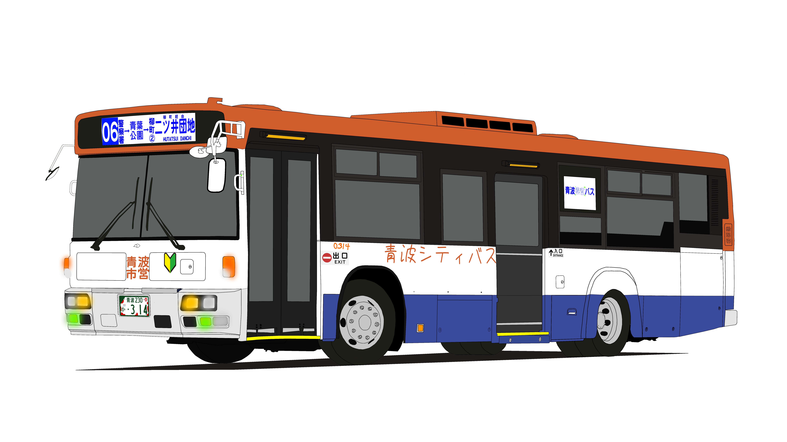

日産ディーゼル スペースランナーUA KL-UA272KAM改
日産ディーゼルが2003年~2005年に製造 フルフラットｗのため同年代のワンステップ車と比較すると詰め込みが効きにくい 2台が除籍、3台が白急バスに移籍
- 製造年：2003–2005
- 製造年：2003~2004
- 導入数：9台
- 導入営業所：神田・港
- 過去在籍営業所：富沢

日産ディーゼルが2003年~2005年に製造 フルフラットｗのため同年代のワンステップ車と比較すると詰め込みが効きにくい 2台が除籍、3台が白急バスに移籍